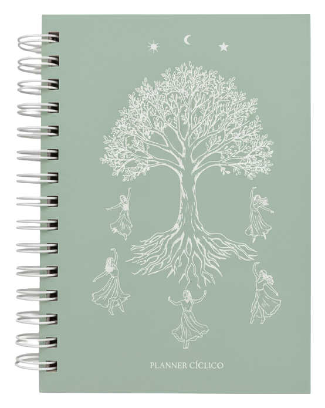

- O ano começa cheio de promessas.
- Você organiza metas, cria visão, faz planos.
- Os meses passam.
Planner Cíclico 2026
Planeje seu ano com clareza, ritmo e direção.
Um planner guiado pelos ciclos sazonais e astrológicos, para organizar metas e rotina sem culpa.
Oferta de lançamento 2026
Planner + Mapa Astral A3 + Ebook por R$180
Quero garantir meu Planner 2026
Veja como o método funciona
Compra segura • acesso imediato ao método
- 4 estaçõesVisão anual com foco e ritmo.
- 12 lunaçõesPlanejamento mensal guiado.
- Método aplicávelFunciona na rotina real.

- 4 estaçõesVisão anual com foco e ritmo.
- 12 lunaçõesPlanejamento mensal guiado.
- Método aplicávelFunciona na rotina real.
Você já percebeu esse padrão?
- A rotina engole seus sonhos e projetos, as urgências tomam espaço.
- Você começa a viver apagando incêndios.
- No final do ano vem a culpa por não ter sustentado o que começou.
O problema
não é você,
e sim tentar viver
de forma linear,
sendo uma mulher
cíclica.
Método em quatro ritmos
Planejamento Cíclico organiza energia, não só tarefas.
Expansão
Hora de abrir caminhos, iniciar movimentos e colocar ideias no mundo.
Foco
Momento de sustentar prioridades, dar visibilidade e acompanhar resultados.
Revisão
Fase para ajustar rota, cortar excessos e preservar o que funciona.
Pausa
Espaço para recolher energia, escutar o corpo e preparar o próximo ciclo.
Ao estruturar seu ano em 4 estações e 12 lunações,
você troca pressa por ritmo.
Não é sobre fazer mais.
É sobre fazer no tempo certo.
Seu kit completo de Planejamento Cíclico

Planner Cíclico 2026
Planejamento anual dividido por estações, organização mensal por fases da Lua, espaço para visão, metas e revisões.
Mapa Astral A3
Para visualizar seu céu e planejar com consciência estratégica.
Ebook prático
Como aplicar o Planejamento Cíclico de verdade na sua rotina.
Para mulheres em ritmo real
Não é mais uma agenda linear.
O Planner Cíclico foi criado para mulheres que:
- Empreendem
- Criam
- Maternam
- Lideram
- Ciclam
Ele une astrologia prática + organização estratégica + ritmo feminino.
Não ignora suas fases, trabalha estrategicamente com elas.
Resultados na rotina real
O que muda na prática quando você usa
- Distribui energia com inteligência
- Evita sobrecarga constante
- Organiza projetos sem se perder
- Aprende a revisar e ajustar metas
- Sustenta crescimento no longo prazo
- Reduz culpa e aumenta clareza
Você deixa de viver no improviso e começa a viver com direção real, alinhada aos seus objetivos e manifestações.
E o melhor: você pode usar em qualquer data do ano, pois ele é dividido por estações e ciclos astrológicos.
Planner Cíclico 2026 Mapa Astral A3 + Ebook
Lote especial 2026
Acesso imediato ao método
Compra segura
- Planner Cíclico 2026
- Mapa Astral A3
- Ebook prático do método
- Bônus: aula ao vivo com a criadora do método
Tudo isso por:
R$180 ou em até 3x sem juros
Quero garantir o combo 2026 Um investimento menor do que o custo emocional de mais um ano desorganizado.
Criadora do método
Quem é Mariana Tevah
Mariana Tevah é a criadora do método de Planejamento Cíclico, unindo astrologia prática, organização estratégica e leitura dos ritmos femininos para transformar planejamento em direção real. Seu trabalho foi desenvolvido para mulheres que querem crescer sem se desconectar do próprio tempo, com estrutura, clareza e constância.
Última chamada
2026 pode ser o ano em que VOCÊ estrutura diferente!
Se você quer planejar com ritmo, consciência e estratégia, respeitando o seu sagrado feminino, o ciclo já começou.
A pergunta é:você vai organizar ou improvisar?
Perguntas frequentes
Eu nunca consigo usar planner. Vou abandonar esse também?
A maioria dos planners é feita para um modelo linear e rígido, que exige a mesma produtividade todos os dias. O Planner Cíclico foi criado para acompanhar suas fases e prever expansão, foco, revisão e pausa.
Eu preciso entender de astrologia para usar?
Não. O planner é guiado pelas fases da Lua e pelas estações de forma prática. Você recebe um ebook explicativo e aprende usando.
Minha rotina é muito corrida. Isso vai funcionar para mim?
Justamente por isso funciona. Se a rotina é intensa, você precisa de organização energética, clareza de prioridades, revisões mensais e ajustes conscientes.